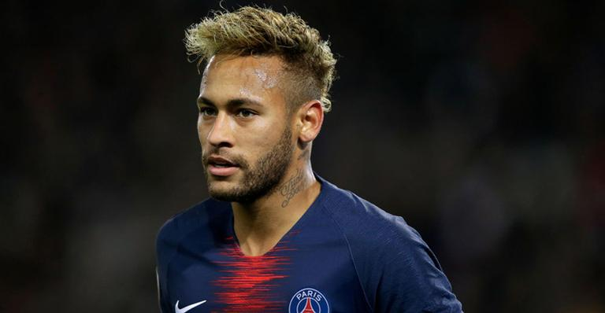

Em 2017, Neymar protagonizou a transferência mais cara da história do futebol ao ser contratado pelo Paris Saint-Germain. O valor da negociação ultrapassou 200 milhões de euros, tornando-se um marco no mercado esportivo. No PSG, Neymar assumiu o papel de principal estrela da equipe. Durante sua passagem, conquistou diversos títulos nacionais, incluindo Campeonatos Franceses, Copas da França e Copas da Liga. Também ajudou o clube a alcançar pela primeira vez a final da Liga dos Campeões da UEFA, em 2020. Apesar de sofrer com algumas lesões ao longo dos anos, Neymar apresentou grandes atuações e formou parcerias de sucesso com jogadores como Kylian Mbappé e Lionel Messi. Sua passagem pelo futebol francês foi marcada por muitos gols, assistências e momentos decisivos, consolidando ainda mais sua carreira internacional.